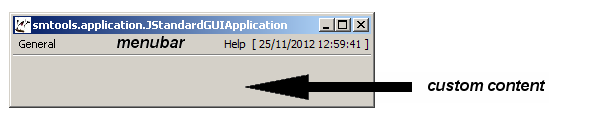
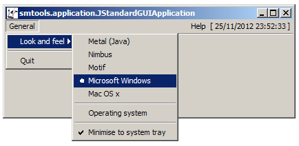

- java.lang.Object
-
- java.awt.Component
-
- java.awt.Container
-
- java.awt.Window
-
- java.awt.Frame
-
- javax.swing.JFrame
-
- org.sm.smtools.application.JStandardGUIApplication
-
- All Implemented Interfaces:
- java.awt.event.ActionListener, java.awt.event.ComponentListener, java.awt.event.WindowListener, java.awt.image.ImageObserver, java.awt.MenuContainer, java.io.Serializable, java.util.EventListener, javax.accessibility.Accessible, javax.swing.RootPaneContainer, javax.swing.WindowConstants
- Direct Known Subclasses:
- JDerivedGUIApplication
public class JStandardGUIApplication extends javax.swing.JFrame implements java.awt.event.ActionListener, java.awt.event.ComponentListener, java.awt.event.WindowListenerTheJStandardGUIApplicationclass provides a standard Swing based GUI framework.By default, the
JStandardGUIApplicationclass will result in the following GUI:
Typically, this
JStandardGUIApplicationis subclassed, with several methods overridden. These methods control the application's settings, the visual layout of its GUI, and the actions that need to be taken upon user input.The overridable methods that setup the GUI's form and behaviour are:
- Java runtime environment version checking
- Command-line parameter parsing
parseParameter(int,String)- -locale=dutch|ukenglish|usenglish (default is ukenglish)
- -developmode
- -width=autosize|fullscreen|<number> (default is autosize)
- -height=autosize|fullscreen|<number> (default is autosize)
- -silent
- -help
- Custom initialisation and clean-up
setupApplicationResourceArchiveFilename()setupApplicationLocalePrefix()initialise(Object[])shutdown()- Splash screen during startup
getSplashScreen()setupSplashScreenContent()setupSplashScreenSound()[see alsoJSplashScreenandMP3Player]- Visual layout (window related)
setupInitialLookAndFeel()lookAndFeelChanged()setupInitialGUISize()setupIsGUIResizable()setupIsGUIRepaintedWhenResizing()setupIcon()setupWindowTitle()setupMinimiseToSystemTrayAllowed()- Visual layout (content related)
setupContentPane(JPanel)setupMenus()setupRightHandMenu()constructMenuItem(String,boolean)constructMenuItem(String)constructRadioButtonMenuItem(String,boolean)constructRadioButtonMenuItem(String)constructCheckBoxMenuItem(String,boolean)constructCheckBoxMenuItem(String)setupStatusBarCustomLabels()setupIsStatusBarEnabled()getStatusBar()setupGlassPane()setupIsClockEnabled()setupAboutBox()[see alsoJAboutBox]- Reacting to user input
Already built-in command-line parameters are:Note that by default, a "General" menu is present, which looks as follows:

Note that if the underlying operating system allows for minimisation to the system tray, then this options becomes available in the menu.
As the application is ran, the global system
Registryis read from the filesystem-registry.ser(and stored back to file at the end). The user registry is also loaded from the fileapplication-registry.serif it exists.When the user wants to quit the application, a confirmation dialog is shown:

Note that this confirmation can be skipped if
DevelopMode.isActivated()istrue.- Version:
- 23/07/2014
- Author:
- Sven Maerivoet
- See Also:
- Serialized Form
-
-
Nested Class Summary
-
Nested classes/interfaces inherited from class javax.swing.JFrame
javax.swing.JFrame.AccessibleJFrame
-
Nested classes/interfaces inherited from class java.awt.Window
java.awt.Window.AccessibleAWTWindow, java.awt.Window.Type
-
-
Field Summary
Fields Modifier and Type Field and Description protected JARResourcesfResourcesAccess point to the application's own resources.protected static intkAutoSizeGUIUseful constant to specify that the GUI should fit exactly around its components.protected static intkFullScreenGUIUseful constant to specify that the GUI should have full screen size.protected static java.lang.StringklafGTKUseful constant for specifying the GTK look-and-feel.protected static java.lang.StringklafMacUseful constant for specifying the Mac OS X look-and-feel.protected static java.lang.StringklafMetalUseful constant for specifying Java's Metal look-and-feel.protected static java.lang.StringklafMotifUseful constant for specifying the Motif look-and-feel.protected static java.lang.StringklafNimbusUseful constant for specifying Java's Nimbus look-and-feel.protected static java.lang.StringklafQuaquaUseful constant for specifying the Quaqua (Mac OS X emulation) look-and-feel.protected static java.lang.StringklafSystemUseful constant for specifying the current platform's look-and-feel.protected static java.lang.StringklafWindowsUseful constant for specifying the Microsoft Windows look-and-feel.protected static java.lang.StringklafWindowsClassicUseful constant for specifying the Microsoft Windows Classic look-and-feel.-
Fields inherited from class javax.swing.JFrame
accessibleContext, EXIT_ON_CLOSE, rootPane, rootPaneCheckingEnabled
-
Fields inherited from class java.awt.Frame
CROSSHAIR_CURSOR, DEFAULT_CURSOR, E_RESIZE_CURSOR, HAND_CURSOR, ICONIFIED, MAXIMIZED_BOTH, MAXIMIZED_HORIZ, MAXIMIZED_VERT, MOVE_CURSOR, N_RESIZE_CURSOR, NE_RESIZE_CURSOR, NORMAL, NW_RESIZE_CURSOR, S_RESIZE_CURSOR, SE_RESIZE_CURSOR, SW_RESIZE_CURSOR, TEXT_CURSOR, W_RESIZE_CURSOR, WAIT_CURSOR
-
Fields inherited from class java.awt.Component
BOTTOM_ALIGNMENT, CENTER_ALIGNMENT, LEFT_ALIGNMENT, RIGHT_ALIGNMENT, TOP_ALIGNMENT
-
-
Constructor Summary
Constructors Constructor and Description JStandardGUIApplication(java.lang.String[] argv, java.lang.Object[] parameters)Constructs aJStandardGUIApplicationobject.
-
Method Summary
All Methods Static Methods Instance Methods Concrete Methods Modifier and Type Method and Description protected voidabortApplication(java.lang.String abortMessage, boolean... appendLocale)Immediately aborts the running application.voidactionPerformed(java.awt.event.ActionEvent e)The GUI's action listener.voidbeep()Emits an audible beep.voidcomponentHidden(java.awt.event.ComponentEvent e)This method does nothing.voidcomponentMoved(java.awt.event.ComponentEvent e)This method does nothing.voidcomponentResized(java.awt.event.ComponentEvent e)This method calls the callback functionwindowResized().voidcomponentShown(java.awt.event.ComponentEvent e)This method does nothing.protected javax.swing.JCheckBoxMenuItemconstructCheckBoxMenuItem(java.lang.String checkBoxMenuItemKey)Helper method for constructing a check box menu item object; a mnemonic is used if it is found.protected javax.swing.JCheckBoxMenuItemconstructCheckBoxMenuItem(java.lang.String checkBoxMenuItemKey, boolean useMnemonic)Helper method for constructing a check box menu item object; an optional mnemonic can be used if it is found.protected javax.swing.JMenuItemconstructMenuItem(java.lang.String menuItemKey)Helper method constructing a menu item object; a mnemonic is used if it is found.protected javax.swing.JMenuItemconstructMenuItem(java.lang.String menuItemKey, boolean useMnemonic)Helper method for constructing a menu item object; an optional mnemonic can be used if it is found.protected javax.swing.JRadioButtonMenuItemconstructRadioButtonMenuItem(java.lang.String radioButtonMenuItemKey)Helper method for constructing a radio button menu item object; a mnemonic is used if it is found.protected javax.swing.JRadioButtonMenuItemconstructRadioButtonMenuItem(java.lang.String radioButtonMenuItemKey, boolean useMnemonic)Helper method for constructing a radio button menu item object; an optional mnemonic can be used if it is found.protected JGUIComponentCachegetGUIComponentCache()Returns a handle to the GUI's internal component cache.java.awt.InsetsgetScreenInsets()Returns the screen insets.java.awt.DimensiongetScreenSize()Returns the screen size.protected JSplashScreengetSplashScreen()Returns a handle to the GUI's splash screen.protected JStatusBargetStatusBar()Getter method for the status bar.voidhideMouseCursor()Emulates hiding the mouse cursor.protected voidinitialise(java.lang.Object[] parameters)Allows custom initialisation of the subclass's member fields.protected voidlookAndFeelChanged()A callback method for when the look-and-feel has changed.static voidmain(java.lang.String[] argv)The application'smainmethod.protected booleanparseParameter(int paramNr, java.lang.String parameter)Allows parsing of custom command-line parameters.protected JAboutBoxsetupAboutBox()Sets up a custom about box.protected java.lang.StringsetupApplicationLocalePrefix()Sets up the path and prefix names to the application's locale databases.protected java.lang.StringsetupApplicationResourceArchiveFilename()Sets up the filename of the JAR or ZIP file containing the application's resources.protected voidsetupContentPane(javax.swing.JPanel contentPane)Sets up the GUI's content pane.protected javax.swing.JPanelsetupGlassPane()Sets up a constructed glass pane.protected java.awt.ImagesetupIcon()Sets up theImagecontaining the GUI's icon.protected java.awt.DimensionsetupInitialGUISize()Sets up the GUI's initial size on the screen.protected java.lang.StringsetupInitialLookAndFeel()Sets up the application's initial look-and-feel.protected booleansetupIsClockEnabled()Sets up whether or not a clock (HH:MM:SS) should be shown at the right of the menubar.protected booleansetupIsGUIRepaintedWhenResizing()Sets up whether or not the GUI should always be repainted when the window is resized.protected booleansetupIsGUIResizable()Sets up whether or not the GUI's window should be resizable.protected booleansetupIsStatusBarEnabled()Sets up whether or not the status bar should be shown at the bottom of the application's window.protected java.util.ArrayList<javax.swing.JMenu>setupMenus()Sets up custom menus.protected booleansetupMinimiseToSystemTrayAllowed()Sets up whether or not the application is allowed to minimise to the system tray (if supported by the host platform).protected intsetupRequiredMajorJavaVersion()Sets up the required major version of the Java runtime engine that wants to run this application.protected intsetupRequiredMinorJavaVersion()Sets up the required minor version of the Java runtime engine that wants to run this application.protected javax.swing.JMenusetupRightHandMenu()Sets up a custom right hand menu (e.g., a "Help" menu).protected javax.swing.JLabelsetupSplashScreenContent()Sets up aJLabelcontaining the splash screen's custom content.protected java.io.InputStreamsetupSplashScreenSound()Sets up the MP3 sound to play during the splash screen.protected java.util.ArrayList<javax.swing.JLabel>setupStatusBarCustomLabels()Sets up custom labels that are shown to the right hand side of the status bar.protected java.lang.StringsetupWindowTitle()Sets up the GUI's window title.protected voidshowParameterWarning(int paramNr, java.lang.String parameter, java.lang.String message)Logs a textual warning message.protected voidshutdown()Allows custom clean-up when the application is shutting down.voidwindowActivated(java.awt.event.WindowEvent e)This method does nothing.voidwindowClosed(java.awt.event.WindowEvent e)This method does nothing.voidwindowClosing(java.awt.event.WindowEvent e)Gracefully ends the application by running the shutdown sequence and saving the registry.voidwindowDeactivated(java.awt.event.WindowEvent e)This method does nothing.voidwindowDeiconified(java.awt.event.WindowEvent e)Plays a sound.voidwindowIconified(java.awt.event.WindowEvent e)Plays a sound and if necessary creates an icon in the system tray.voidwindowOpened(java.awt.event.WindowEvent e)This method does nothing.protected voidwindowResized()A callback function for when the GUI's window is resized.-
Methods inherited from class javax.swing.JFrame
addImpl, createRootPane, frameInit, getAccessibleContext, getContentPane, getDefaultCloseOperation, getGlassPane, getGraphics, getJMenuBar, getLayeredPane, getRootPane, getTransferHandler, isDefaultLookAndFeelDecorated, isRootPaneCheckingEnabled, paramString, processWindowEvent, remove, repaint, setContentPane, setDefaultCloseOperation, setDefaultLookAndFeelDecorated, setGlassPane, setIconImage, setJMenuBar, setLayeredPane, setLayout, setRootPane, setRootPaneCheckingEnabled, setTransferHandler, update
-
Methods inherited from class java.awt.Frame
addNotify, getCursorType, getExtendedState, getFrames, getIconImage, getMaximizedBounds, getMenuBar, getState, getTitle, isResizable, isUndecorated, remove, removeNotify, setBackground, setCursor, setExtendedState, setMaximizedBounds, setMenuBar, setOpacity, setResizable, setShape, setState, setTitle, setUndecorated
-
Methods inherited from class java.awt.Window
addPropertyChangeListener, addPropertyChangeListener, addWindowFocusListener, addWindowListener, addWindowStateListener, applyResourceBundle, applyResourceBundle, createBufferStrategy, createBufferStrategy, dispose, getBackground, getBufferStrategy, getFocusableWindowState, getFocusCycleRootAncestor, getFocusOwner, getFocusTraversalKeys, getIconImages, getInputContext, getListeners, getLocale, getModalExclusionType, getMostRecentFocusOwner, getOpacity, getOwnedWindows, getOwner, getOwnerlessWindows, getShape, getToolkit, getType, getWarningString, getWindowFocusListeners, getWindowListeners, getWindows, getWindowStateListeners, hide, isActive, isAlwaysOnTop, isAlwaysOnTopSupported, isAutoRequestFocus, isFocusableWindow, isFocusCycleRoot, isFocused, isLocationByPlatform, isOpaque, isShowing, isValidateRoot, pack, paint, postEvent, processEvent, processWindowFocusEvent, processWindowStateEvent, removeWindowFocusListener, removeWindowListener, removeWindowStateListener, reshape, setAlwaysOnTop, setAutoRequestFocus, setBounds, setBounds, setCursor, setFocusableWindowState, setFocusCycleRoot, setIconImages, setLocation, setLocation, setLocationByPlatform, setLocationRelativeTo, setMinimumSize, setModalExclusionType, setSize, setSize, setType, setVisible, show, toBack, toFront
-
Methods inherited from class java.awt.Container
add, add, add, add, add, addContainerListener, applyComponentOrientation, areFocusTraversalKeysSet, countComponents, deliverEvent, doLayout, findComponentAt, findComponentAt, getAlignmentX, getAlignmentY, getComponent, getComponentAt, getComponentAt, getComponentCount, getComponents, getComponentZOrder, getContainerListeners, getFocusTraversalPolicy, getInsets, getLayout, getMaximumSize, getMinimumSize, getMousePosition, getPreferredSize, insets, invalidate, isAncestorOf, isFocusCycleRoot, isFocusTraversalPolicyProvider, isFocusTraversalPolicySet, layout, list, list, locate, minimumSize, paintComponents, preferredSize, print, printComponents, processContainerEvent, remove, removeAll, removeContainerListener, setComponentZOrder, setFocusTraversalKeys, setFocusTraversalPolicy, setFocusTraversalPolicyProvider, setFont, transferFocusDownCycle, validate, validateTree
-
Methods inherited from class java.awt.Component
action, add, addComponentListener, addFocusListener, addHierarchyBoundsListener, addHierarchyListener, addInputMethodListener, addKeyListener, addMouseListener, addMouseMotionListener, addMouseWheelListener, bounds, checkImage, checkImage, coalesceEvents, contains, contains, createImage, createImage, createVolatileImage, createVolatileImage, disable, disableEvents, dispatchEvent, enable, enable, enableEvents, enableInputMethods, firePropertyChange, firePropertyChange, firePropertyChange, firePropertyChange, firePropertyChange, firePropertyChange, firePropertyChange, firePropertyChange, firePropertyChange, getBaseline, getBaselineResizeBehavior, getBounds, getBounds, getColorModel, getComponentListeners, getComponentOrientation, getCursor, getDropTarget, getFocusListeners, getFocusTraversalKeysEnabled, getFont, getFontMetrics, getForeground, getGraphicsConfiguration, getHeight, getHierarchyBoundsListeners, getHierarchyListeners, getIgnoreRepaint, getInputMethodListeners, getInputMethodRequests, getKeyListeners, getLocation, getLocation, getLocationOnScreen, getMouseListeners, getMouseMotionListeners, getMousePosition, getMouseWheelListeners, getName, getParent, getPeer, getPropertyChangeListeners, getPropertyChangeListeners, getSize, getSize, getTreeLock, getWidth, getX, getY, gotFocus, handleEvent, hasFocus, imageUpdate, inside, isBackgroundSet, isCursorSet, isDisplayable, isDoubleBuffered, isEnabled, isFocusable, isFocusOwner, isFocusTraversable, isFontSet, isForegroundSet, isLightweight, isMaximumSizeSet, isMinimumSizeSet, isPreferredSizeSet, isValid, isVisible, keyDown, keyUp, list, list, list, location, lostFocus, mouseDown, mouseDrag, mouseEnter, mouseExit, mouseMove, mouseUp, move, nextFocus, paintAll, prepareImage, prepareImage, printAll, processComponentEvent, processFocusEvent, processHierarchyBoundsEvent, processHierarchyEvent, processInputMethodEvent, processKeyEvent, processMouseEvent, processMouseMotionEvent, processMouseWheelEvent, removeComponentListener, removeFocusListener, removeHierarchyBoundsListener, removeHierarchyListener, removeInputMethodListener, removeKeyListener, removeMouseListener, removeMouseMotionListener, removeMouseWheelListener, removePropertyChangeListener, removePropertyChangeListener, repaint, repaint, repaint, requestFocus, requestFocus, requestFocusInWindow, requestFocusInWindow, resize, resize, revalidate, setComponentOrientation, setDropTarget, setEnabled, setFocusable, setFocusTraversalKeysEnabled, setForeground, setIgnoreRepaint, setLocale, setMaximumSize, setName, setPreferredSize, show, size, toString, transferFocus, transferFocusBackward, transferFocusUpCycle
-
-
-
-
Field Detail
-
fResources
protected JARResources fResources
Access point to the application's own resources.
-
kAutoSizeGUI
protected static final int kAutoSizeGUI
Useful constant to specify that the GUI should fit exactly around its components.- See Also:
- Constant Field Values
-
kFullScreenGUI
protected static final int kFullScreenGUI
Useful constant to specify that the GUI should have full screen size.Note that the maximised state of a window is currently not yet supported due to Java lack thereof.
- See Also:
- Constant Field Values
-
klafGTK
protected static final java.lang.String klafGTK
Useful constant for specifying the GTK look-and-feel.- See Also:
- Constant Field Values
-
klafMac
protected static final java.lang.String klafMac
Useful constant for specifying the Mac OS X look-and-feel.- See Also:
- Constant Field Values
-
klafMetal
protected static final java.lang.String klafMetal
Useful constant for specifying Java's Metal look-and-feel.- See Also:
- Constant Field Values
-
klafMotif
protected static final java.lang.String klafMotif
Useful constant for specifying the Motif look-and-feel.- See Also:
- Constant Field Values
-
klafNimbus
protected static final java.lang.String klafNimbus
Useful constant for specifying Java's Nimbus look-and-feel.- See Also:
- Constant Field Values
-
klafQuaqua
protected static final java.lang.String klafQuaqua
Useful constant for specifying the Quaqua (Mac OS X emulation) look-and-feel.- See Also:
- Constant Field Values
-
klafSystem
protected static final java.lang.String klafSystem
Useful constant for specifying the current platform's look-and-feel.- See Also:
- Constant Field Values
-
klafWindows
protected static final java.lang.String klafWindows
Useful constant for specifying the Microsoft Windows look-and-feel.- See Also:
- Constant Field Values
-
klafWindowsClassic
protected static final java.lang.String klafWindowsClassic
Useful constant for specifying the Microsoft Windows Classic look-and-feel.- See Also:
- Constant Field Values
-
-
Constructor Detail
-
JStandardGUIApplication
public JStandardGUIApplication(java.lang.String[] argv, java.lang.Object[] parameters)Constructs aJStandardGUIApplicationobject.During construction of the GUI, the following events take place:
- The required version of the Java runtime engine is checked (see
setupRequiredMajorJavaVersion()andsetupRequiredMinorJavaVersion()). - The system
JARResourcesare loaded. - The GUI is set to auto-size by default (see
setupInitialGUISize()andsetupIsGUIResizable()). - British English is the default language used.
- The command-line parameters are parsed (see
parseParameter(int,String)). - The system's locale
I18NL10Ndatabase is loaded. - The application's
JARResourcesand localeI18NL10Ndatabase are loaded (if they are present). - The global system
Registryis read from file. - The GUI's component cache is initialised (see
JGUIComponentCache). - The look-and-feel of the operating system is used by default.
- A optional splash screen is shown (see
setupSplashScreenContent()andsetupSplashScreenSound()). - Custom initialisation is performed (see
initialise(Object[])). Note that the objects are specified asnew Object[] {object1,object2}. - The window's icon and title are set (see
setupIcon()andsetupWindowTitle()). - The GUI's content pane is constructed (see
setupContentPane(JPanel)). - The GUI's status bar is constructed (see
setupStatusBarCustomLabels(),setupIsStatusBarEnabled(), andgetStatusBar()). - The GUI's menu bar is constructed (see
setupMenus()andsetupRightHandMenu()). - The about box is shown (see
setupAboutBox()). - The application checks if minimisation to the system tray is allowed (see
setupMinimiseToSystemTrayAllowed()). - The glass pane is constructed (see
setupGlassPane()).
nullforparameters.- Parameters:
argv- an array of strings containing the command-line parametersparameters- an array of objects containing the parameters to be passed to the GUI'sinitialise(Object[])method
- The required version of the Java runtime engine is checked (see
-
-
Method Detail
-
abortApplication
protected final void abortApplication(java.lang.String abortMessage, boolean... appendLocale)Immediately aborts the running application.- Parameters:
abortMessage- the message to display when abortingappendLocale- optional argument that, when set totrue, appends a localised message that the application is aborted
-
actionPerformed
public void actionPerformed(java.awt.event.ActionEvent e)
The GUI's action listener.Note that when overriding this method in a subclass, its parent should explicitly be called in order to guarantee the correct default processing of the user's input:
super.actionPerformed(e);
// rest of method's code- Specified by:
actionPerformedin interfacejava.awt.event.ActionListener- Parameters:
e- theActionEventthat is received
-
beep
public final void beep()
Emits an audible beep.
-
componentHidden
public final void componentHidden(java.awt.event.ComponentEvent e)
This method does nothing.Note that this method cannot be overridden!
- Specified by:
componentHiddenin interfacejava.awt.event.ComponentListener- Parameters:
e- theWindowEventthat is received
-
componentMoved
public final void componentMoved(java.awt.event.ComponentEvent e)
This method does nothing.Note that this method cannot be overridden!
- Specified by:
componentMovedin interfacejava.awt.event.ComponentListener- Parameters:
e- theWindowEventthat is received
-
componentResized
public final void componentResized(java.awt.event.ComponentEvent e)
This method calls the callback functionwindowResized().Note that this method cannot be overridden!
- Specified by:
componentResizedin interfacejava.awt.event.ComponentListener- Parameters:
e- theWindowEventthat is received
-
componentShown
public final void componentShown(java.awt.event.ComponentEvent e)
This method does nothing.Note that this method cannot be overridden!
- Specified by:
componentShownin interfacejava.awt.event.ComponentListener- Parameters:
e- theWindowEventthat is received
-
constructCheckBoxMenuItem
protected final javax.swing.JCheckBoxMenuItem constructCheckBoxMenuItem(java.lang.String checkBoxMenuItemKey)
Helper method for constructing a check box menu item object; a mnemonic is used if it is found.Note that this method cannot be overridden!
- Parameters:
checkBoxMenuItemKey- the key of the menu item- Returns:
- a check box menu item object
-
constructCheckBoxMenuItem
protected final javax.swing.JCheckBoxMenuItem constructCheckBoxMenuItem(java.lang.String checkBoxMenuItemKey, boolean useMnemonic)Helper method for constructing a check box menu item object; an optional mnemonic can be used if it is found.Note that this method cannot be overridden!
- Parameters:
checkBoxMenuItemKey- the key of the menu itemuseMnemonic- a flag indicating whether to use a mnemonic or not- Returns:
- a check box menu item object
-
constructMenuItem
protected final javax.swing.JMenuItem constructMenuItem(java.lang.String menuItemKey)
Helper method constructing a menu item object; a mnemonic is used if it is found.Note that this method cannot be overridden!
- Parameters:
menuItemKey- the key of the menu item- Returns:
- a menu item object
-
constructMenuItem
protected final javax.swing.JMenuItem constructMenuItem(java.lang.String menuItemKey, boolean useMnemonic)Helper method for constructing a menu item object; an optional mnemonic can be used if it is found.Note that this method cannot be overridden!
- Parameters:
menuItemKey- the key of the menu itemuseMnemonic- a flag indicating whether to use a mnemonic or not- Returns:
- a menu item object
-
constructRadioButtonMenuItem
protected final javax.swing.JRadioButtonMenuItem constructRadioButtonMenuItem(java.lang.String radioButtonMenuItemKey)
Helper method for constructing a radio button menu item object; a mnemonic is used if it is found.Note that this method cannot be overridden!
- Parameters:
radioButtonMenuItemKey- the key of the menu item- Returns:
- a radio button menu item object
-
constructRadioButtonMenuItem
protected final javax.swing.JRadioButtonMenuItem constructRadioButtonMenuItem(java.lang.String radioButtonMenuItemKey, boolean useMnemonic)Helper method for constructing a radio button menu item object; an optional mnemonic can be used if it is found.Note that this method cannot be overridden!
- Parameters:
radioButtonMenuItemKey- the key of the menu itemuseMnemonic- a flag indicating whether to use a mnemonic or not- Returns:
- a radio button menu item object
-
getGUIComponentCache
protected final JGUIComponentCache getGUIComponentCache()
Returns a handle to the GUI's internal component cache.- Returns:
- a handle to the GUI's internal component cache
- See Also:
JGUIComponentCache
-
getScreenInsets
public final java.awt.Insets getScreenInsets()
Returns the screen insets.- Returns:
- the screen insets
-
getScreenSize
public final java.awt.Dimension getScreenSize()
Returns the screen size.- Returns:
- the screen size
-
getSplashScreen
protected final JSplashScreen getSplashScreen()
Returns a handle to the GUI's splash screen.- Returns:
- a handle to the GUI's splash screen
- See Also:
JSplashScreen
-
getStatusBar
protected final JStatusBar getStatusBar()
Getter method for the status bar.- Returns:
- the status bar
-
hideMouseCursor
public void hideMouseCursor()
Emulates hiding the mouse cursor.
-
initialise
protected void initialise(java.lang.Object[] parameters)
Allows custom initialisation of the subclass's member fields.The parameters in the
Object[]array are passed through the class's constructor (seeJStandardGUIApplication(String[],Object[])). They are typically specified asnew Object[] {object1,object2}.- Parameters:
parameters- an array ofObjects
-
lookAndFeelChanged
protected void lookAndFeelChanged()
A callback method for when the look-and-feel has changed.
-
main
public static void main(java.lang.String[] argv)
The application'smainmethod.Note that this method should be overridden by a derived subclass:
public static void main(String[] argv)
{
DerivedGUIApplication derivedGUIApplication = new DerivedGUIApplication(argv);
}- Parameters:
argv- an array of strings containing the command-line parameters
-
parseParameter
protected boolean parseParameter(int paramNr, java.lang.String parameter)Allows parsing of custom command-line parameters.A derived subclass typically overrides this method to parse all its custom command-line parameters.
Note that if an error occurs during parsing, the
showParameterWarning(int,String,String)method should be called with the appropriate parameters.The following example shows the parsing of one custom parameter (with a custom option):
final String kCustomParameter = "PARAMETER";
final String kCustomOption = "OPTION";
String upperCaseParameter = parameter.toUpperCase();
// parse parameter
if (upperCaseParameter.startsWith(kCustomParameter + "=")) {
String upperCaseOption = upperCaseParameter.substring(kCustomParameter.length() + 1);
// parse option
if (upperCaseOption.equalsIgnoreCase(kCustomOption)) {
// take action as parameter is parsed
}
else {
showParameterWarning(paramNr,parameter,"not a valid option");
}
// indicate that parameter was valid
return true;
}
else {
// indicate that parameter is unknown
return false;
}- Parameters:
paramNr- the number of the parameter that is being parsedparameter- the unmodified parameter as specified on the command-line- Returns:
trueif the parameter was parsed successfully,falseotherwise- See Also:
showParameterWarning(int,String,String)
-
setupAboutBox
protected JAboutBox setupAboutBox()
Sets up a custom about box.Note that this method returns
nullby default, indicating that no about box is available.- Returns:
- the about box dialog
- See Also:
JAboutBox
-
setupApplicationLocalePrefix
protected java.lang.String setupApplicationLocalePrefix()
Sets up the path and prefix names to the application's locale databases.If
nullis specified, then the system ignores loading the application's locale databases.- Returns:
- the path to the location of the application's locale databases
- See Also:
I18NL10N
-
setupApplicationResourceArchiveFilename
protected java.lang.String setupApplicationResourceArchiveFilename()
Sets up the filename of the JAR or ZIP file containing the application's resources.If
nullis specified, then the system ignores loading the application's resources.- Returns:
- the filename of the archive (JAR or ZIP) containing the application's resources
- See Also:
JARResources
-
setupContentPane
protected void setupContentPane(javax.swing.JPanel contentPane)
Sets up the GUI's content pane.A derived subclass typically overrides this method. The subclass can operate on the given
contentPaneparameter (which is initialised, i.e., notnull, by default).A subclass thus sets the content pane's layout managers, adds components to it, ...
- Parameters:
contentPane- the GUI's main content pane to modify
-
setupGlassPane
protected javax.swing.JPanel setupGlassPane()
Sets up a constructed glass pane.An application will typically override this method and create its own glass pane object inside it after returning it.
- Returns:
- a constructed glass pane
-
setupIcon
protected java.awt.Image setupIcon()
Sets up theImagecontaining the GUI's icon.The
Imageshould be a JPG-file, 32x32 pixels with 24-bit colourdepth (i.e., true colour).- Returns:
- the
Imagecontaining the GUI's icon
-
setupInitialGUISize
protected java.awt.Dimension setupInitialGUISize()
Sets up the GUI's initial size on the screen.A derived subclass should return a
Dimensionobject containing the initial width and height of the GUI's window. Their values are expressed in pixels, but the following two special values are also accepted:An example:
return (new Dimension(JStandardGUIApplication.kFullScreenGUI,250));which specifies a GUI with full screen width and 250 pixels height.
- Returns:
- the GUI's initial size on the screen as a
Dimensionobject
-
setupInitialLookAndFeel
protected java.lang.String setupInitialLookAndFeel()
Sets up the application's initial look-and-feel.The possible values that can be returned are:
- the GTK look-and-feel (
klafGTK) - the Mac OS X look-and-feel (
klafMac) - Java's Metal look-and-feel (
klafMetal) - the Motif look-and-feel (
klafMotif) - Java's Nimbus look-and-feel (
klafNimbus) - the Quaqua (Mac OS X emulation) look-and-feel (
klafQuaqua) - the Microsoft Windows look-and-feel (
klafWindows) - the Microsoft Windows (classic) look-and-feel (
klafWindowsClassic) - the current platform's look-and-feel (
klafSystem)
Note that this method returns the current platform's look-and-feel by default.
- Returns:
- the application's initial look-and-feel
- the GTK look-and-feel (
-
setupIsClockEnabled
protected boolean setupIsClockEnabled()
Sets up whether or not a clock (HH:MM:SS) should be shown at the right of the menubar.Note that this method returns
trueby default.- Returns:
- whether or not a clock (HH:MM:SS) should be shown at the right of the menubar
-
setupIsGUIRepaintedWhenResizing
protected boolean setupIsGUIRepaintedWhenResizing()
Sets up whether or not the GUI should always be repainted when the window is resized. This only works if the host platform supports it.This method returns
trueby default.- Returns:
trueif the GUI should be repainted when the window is resized
-
setupIsGUIResizable
protected boolean setupIsGUIResizable()
Sets up whether or not the GUI's window should be resizable.This method returns
trueby default.- Returns:
trueif the GUI's window should be resizable,falseif it should be fixed size
-
setupIsStatusBarEnabled
protected boolean setupIsStatusBarEnabled()
Sets up whether or not the status bar should be shown at the bottom of the application's window.Note that this method returns
trueby default.- Returns:
- whether or not the status bar should be shown at the bottom of the application's window
-
setupMenus
protected java.util.ArrayList<javax.swing.JMenu> setupMenus()
Sets up custom menus.By default, the application already contains a "General" menu containing access to the optional about box, setting the GUI's look and feel and getting confirmation when the user wants to quit the application.
Note that this method returns
nullby default.- Returns:
- an
ArrayListof menus - See Also:
setupRightHandMenu()
-
setupMinimiseToSystemTrayAllowed
protected boolean setupMinimiseToSystemTrayAllowed()
Sets up whether or not the application is allowed to minimise to the system tray (if supported by the host platform).Note that this method returns
trueby default.- Returns:
- whether or not the application is allowed to minimise to the system tray
-
setupRequiredMajorJavaVersion
protected int setupRequiredMajorJavaVersion()
Sets up the required major version of the Java runtime engine that wants to run this application.The default is 1 (for JRE 1.7.0).
- Returns:
- the required major version of the Java runtime engine
-
setupRequiredMinorJavaVersion
protected int setupRequiredMinorJavaVersion()
Sets up the required minor version of the Java runtime engine that wants to run this application.The default is 7 (for JRE 1.7.0).
- Returns:
- the required minor version of the Java runtime engine
-
setupRightHandMenu
protected javax.swing.JMenu setupRightHandMenu()
Sets up a custom right hand menu (e.g., a "Help" menu).Note that this method returns
nullby default.- Returns:
- a menu used in the right part of the menubar
- See Also:
setupMenus()
-
setupSplashScreenContent
protected javax.swing.JLabel setupSplashScreenContent()
Sets up aJLabelcontaining the splash screen's custom content.See
JSplashScreenfor more information regarding the splash screen.- Returns:
- a
JLabelcontaining the splash screen's custom content - See Also:
JSplashScreen
-
setupSplashScreenSound
protected java.io.InputStream setupSplashScreenSound()
Sets up the MP3 sound to play during the splash screen.See
JSplashScreenfor more information regarding the splash screen andMP3Playerfor playing MP3 sounds.- Returns:
- the MP3 sound to play during the splash screen
- See Also:
JSplashScreen,MP3Player
-
setupStatusBarCustomLabels
protected java.util.ArrayList<javax.swing.JLabel> setupStatusBarCustomLabels()
Sets up custom labels that are shown to the right hand side of the status bar.- Returns:
- an
ArrayListof custom labels, ornullif none are provided
-
setupWindowTitle
protected java.lang.String setupWindowTitle()
Sets up the GUI's window title.- Returns:
- the GUI's window title
-
showParameterWarning
protected final void showParameterWarning(int paramNr, java.lang.String parameter, java.lang.String message)Logs a textual warning message.- Parameters:
paramNr- the number of the parameter that failed to get parsedparameter- the unmodified parameter as specified on the command-linemessage- the warning message to log- See Also:
parseParameter(int,String)
-
shutdown
protected void shutdown()
Allows custom clean-up when the application is shutting down.Note that the
shutdown()sequence is not ran in case of a fatal error resulting in early abort.- See Also:
abortApplication(String,boolean...)
-
windowActivated
public void windowActivated(java.awt.event.WindowEvent e)
This method does nothing.- Specified by:
windowActivatedin interfacejava.awt.event.WindowListener- Parameters:
e- theWindowEventthat is received
-
windowClosed
public void windowClosed(java.awt.event.WindowEvent e)
This method does nothing.- Specified by:
windowClosedin interfacejava.awt.event.WindowListener- Parameters:
e- theWindowEventthat is received
-
windowClosing
public final void windowClosing(java.awt.event.WindowEvent e)
Gracefully ends the application by running the shutdown sequence and saving the registry.Note that this method cannot be overridden!
- Specified by:
windowClosingin interfacejava.awt.event.WindowListener- Parameters:
e- theWindowEventthat is received
-
windowDeactivated
public void windowDeactivated(java.awt.event.WindowEvent e)
This method does nothing.- Specified by:
windowDeactivatedin interfacejava.awt.event.WindowListener- Parameters:
e- theWindowEventthat is received
-
windowDeiconified
public final void windowDeiconified(java.awt.event.WindowEvent e)
Plays a sound.Note that this method cannot be overridden!
- Specified by:
windowDeiconifiedin interfacejava.awt.event.WindowListener- Parameters:
e- theWindowEventthat is received
-
windowIconified
public final void windowIconified(java.awt.event.WindowEvent e)
Plays a sound and if necessary creates an icon in the system tray.Note that this method cannot be overridden!
- Specified by:
windowIconifiedin interfacejava.awt.event.WindowListener- Parameters:
e- theWindowEventthat is received
-
windowOpened
public void windowOpened(java.awt.event.WindowEvent e)
This method does nothing.- Specified by:
windowOpenedin interfacejava.awt.event.WindowListener- Parameters:
e- theWindowEventthat is received
-
windowResized
protected void windowResized()
A callback function for when the GUI's window is resized.
-
-